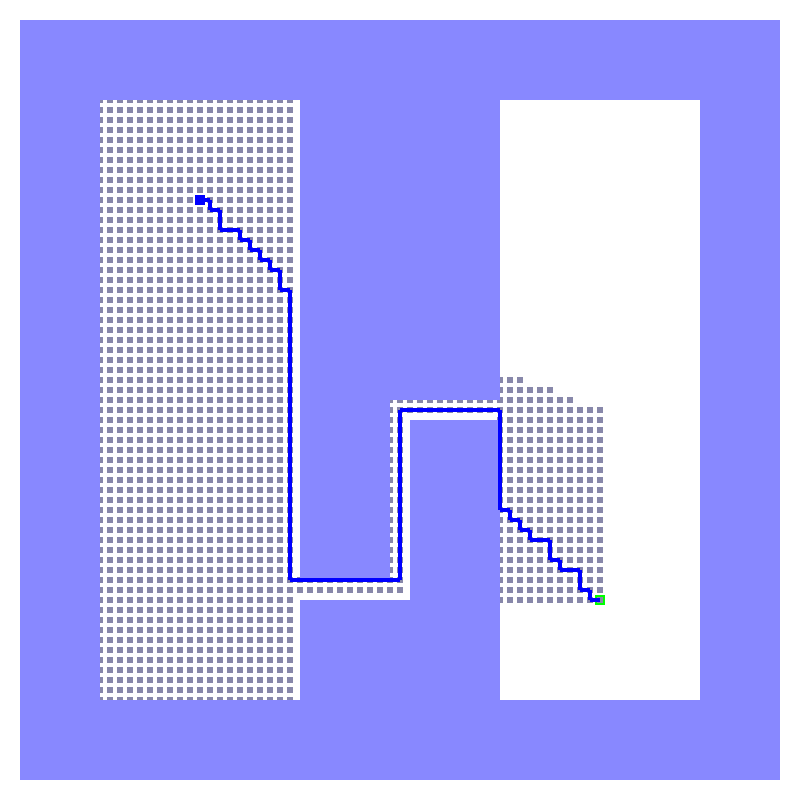
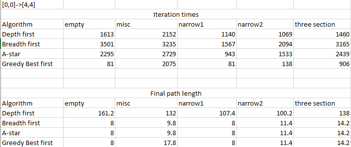

This is the report for my assignment 1.I have implemented four kinds of ways to realize the automatic path searching for potential robots use. The methods includes Depth-first search, Breadth-first, A-star and Greedy Best first algorithm.
For the following section, I will campare the four methods by setting start point and end point fixed in the same map.
This algorithm used the stack concept, which means "last in first out" to determine the priority.

This algorithm used the queue concept, which means "first in first out" to determine the priority.

This algorithm combined the first in first out concept with the direct distance to the targer to determine the priority.

This algorithm only used the direct distance to the targer to determine the priority.
The above graphs show that all the four algorithm are successfully implemented. Where we can see that Depth first algorithm is relatively fast if compared with Breadth first algorithm. However, it gives out a long final path, which is far from expectation. A-star has a better speed than Breadth first search, and gives out the shortest path, which is acceptable and should be widely used. The A-star algorithm balanced between the Depth first search and the Breadth first search. The Greedy best path seems to be quick and short for this case, while by setting another configuration for the map, it could be awful. This will be showed in the following section.


In this case, Greedy Best first algorithm still gives out a faster response. However, it gives out a non-ideal path, which is longer than the shortest path obviously. The following section will continue to study the performance of the greedy best algorithm by inverting the start and end point.


We can see that the postion of the start and end points also have a great influence on the performance. This time greedy best first algorithm still have a better behavior over the speed.

This sum up table data are collected when the start point is at [0,0] and end point is set at [4,4]. The following one will contain data when the start and end points are inverted.

We can see that, besides the above conclusion. The performance of Depth first algorithm is also heavily dependent on the start and end points.